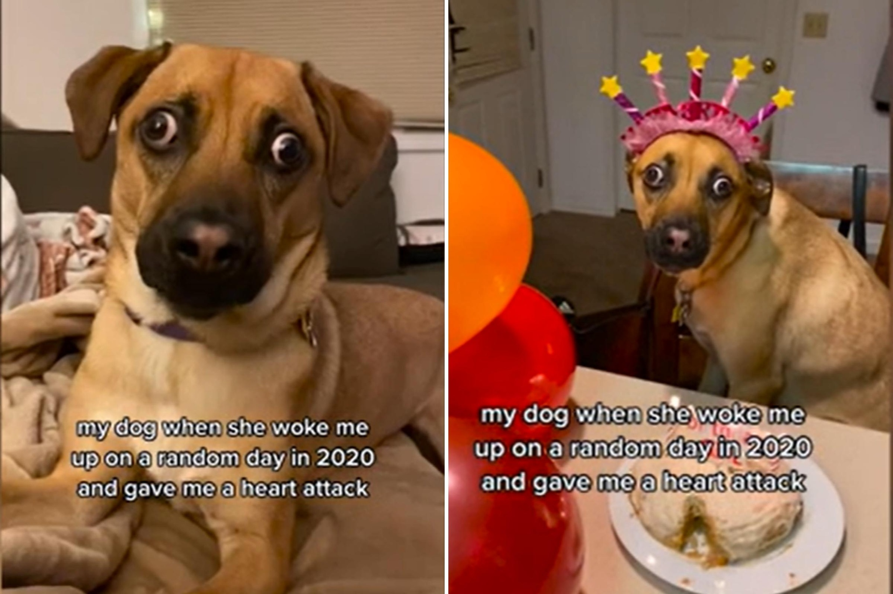

Dog Develops Rare Condition Overnight Causing 'Startled' ExpressionWhen a dog owner noticed her rescue dog's eyes start swelling up, she immediately sought medical attention, but even the vet was perplexed by the strange condition. In 2020, Kelly McArdle returned home from work to notice Bailey's eyes were swollen, but it was initially seen as allergies and the owner was told she had nothing to worry about. But McArdle, who lives in New Jersey, knew that all was not well, telling Newsweek that "a few days later, Bailey's eyeballs were protruding from her head." "It looked as if they could fall out, and while it may have looked funny, as a dog owner it was horrifying," she said. Bailey was tested for glaucoma, tumors, abscesses, thyroid problems and infections, but, McArdle said, "nothing seemed to work." Without making any progress, she feared that the diagnosis would lead to "permanent damage to her eyes." "Finally, after our vet consulted with two ophthalmologists, we had a breakthrough and learned that Bailey had a rare disease. She suffers from a condition called extraocular myositis, a rare autoimmune disease, resulting in the startled expression," McArdle said. In 2015, Open Veterinary Journal highlighted the rarity of extraocular myositis in dogs, saying that most veterinarians may never encounter it during their practice. The first report of the condition came in 1989, and it's thought to be most prevalent in golden retrievers, younger dogs and females. The condition is characterized by a painless bulging of the eyes, which is clinically referred to as bilateral exophthalmos. Case studies of the condition have shown there is visual impairment, which makes the dog likely to walk into things, with a poor ability to focus and a startled expression. Once the condition is diagnosed, it can be treated with medication to reduce the inflammation. Open Veterinary Journal said it usually takes around three weeks of steroid administration before the problem is resolved. It was a terrifying experience for McArdle and Bailey to go through, but thankfully it hasn't happened since. "Bailey was treated with very high doses of corticosteroids and immunosuppressants and was gradually tapered off them," McArdle said. "Flare-ups of extraocular myositis are presumed to be from an allergic reaction of some sort, perhaps an environmental allergy. But to this day I'm not exactly sure why it happened. She continued: "Bailey was treated for four months and has not had a relapse of the disease. She's been living happily and healthy ever since." In May, McArdle shared a video of Bailey's startled expression, which she said gave her "a heart attack" at the time. The clip has already gained over 2 million views and more than 363,000 likes. Many people were glad to see that Bailey is back to full health, although they couldn't help but laugh about her unfortunate expression. "There has been an overwhelming response to Bailey's eye disease online," McArdle said. "The disease is quite rare and creates a googly-eye expression in dogs, so the reactions have ranged from shock, worry, to lots of laughs. "We've gained a large audience of people who now want to be a part of her day-to-day life and be up to date if she ever has a flare-up of extraocular myositis again," she continued. "Being that the disease is painless and treatable, once Bailey got better I was able to find the humor in it and create funny videos to spread awareness." Hundreds of people have commented on the TikTok post, with one person writing: "I just Googled what it is, when I realized the puppy will be fine I allowed myself to laugh." Another person responded: "She's seen things." Do you have funny and adorable videos or pictures of your pet you want to share? Send them to life@newsweek.com with some details about your best friend and they could appear in our Pet of the Week lineup. |
 |